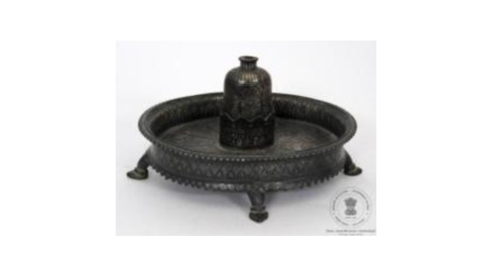

🔇 Is bhasha me is vastu ka audio abhi uplabdh nahi hai.
अभिग्रहण क्रमांक: XXXIII-422 अगरदान की शीशी एवं तश्तरी

अभिग्रहण क्रमांक: XXXIII-422
यह अगरदान की शीशी और तश्तरी का एक सुंदर सेट है। अंडाकार आकार की तश्तरी चार नक्काशीदार पैरों पर बनी है तथा इसके चारों ओर ऊँची किनारी है। तश्तरी के मध्य भाग में खुले मुँह वाली बेलनाकार शीशी लगी हुई है। शीशी और तश्तरी चाँदी, ताँबे तथा जस्ता से निर्मित हैं। बाहरी भाग पर चाँदी की तहनिशान और तारकशी तकनीक से पोस्त के फूल तथा लता-बेल के अलंकरण बनाए गए हैं। सभी अलंकरणों में चाँदी की जड़ाई की गई है। तश्तरी की दोनों किनारियाँ कंगूरेदार हैं तथा शीशी का धारक दुर्ग की प्राचीर जैसी आकृति में बनाया गया है। शीशी के कंधे वाले भाग पर खड़ी रेखाओं का अलंकरण है। यह कलाकृति भारत के कर्नाटक राज्य के बीदर की है तथा इसका निर्माण 19वीं शताब्दी ईस्वी में हुआ माना जाता है।
Acc No: XXXIII-422 Perfume Bottle with Tray
Acc No: XXXIII-422
A perfume bottle (Attardan) set consisting of an oval tray with four carved legs and raised borders, holding an open-mouthed cylindrical bottle at its center. The bottle and tray are crafted from zinc alloy, copper, and silver. The exterior is embellished with poppy flower designs and floral borders using silver 'Tahnishan' (sheet inlay) and 'Tarkashi' (wire inlay) techniques. The tray features crenellated edges and a fortress-parapet shaped holder, with vertical lines on the bottle's shoulder. Originating from Bidar, Karnataka, India, it dates to the 19th century CE.
4. ట్రేతో కూడిన ధూపం సీసా
Acc No: XXXIII-422
ట్రేతో కూడిన ధూపం (ఇటార్డన్) బాటిల్, నాలుగు చెక్కిన కాళ్ళ అండాకార ఆకారపు ట్రే చుట్టూ ఎత్తైన అంచు కలిగి ఉంటుంది, చట్రం మధ్య భాగంలో నోరు తెరిచి స్థూపాకార ఆకారంలో ఉన్న సీసా అమర్చబడి ఉంటుంది. వెండి మరియు రాగి భాగాలు మరియు జింక్ పదార్థంతో తయారు చేసిన బాటిల్ మరియు ట్రే. గసగసాల పువ్వు నమూనాలు మరియు క్రీపర్ బోర్డర్లు వెండలి తైనిషన్ మరియు తర్కాషిలో బాహ్యంగా రూపొందించబడ్డాయి సాంకేతికతలు పనిచేస్తాయి మరియు అన్ని నమూనాలు వెండితో చెక్కబడి ఉంటాయి. ట్రే యొక్క రెండు రిమ్లు క్రెనెల్లేట్ చేయబడి ఉంటాయి మరియు హోల్డర్ భుజం మీద బాటిల్ నిలువు గీతల రూపకల్పనతో ఉంటుంది. ఈ వస్తువు యొక్క కళారూపం భారతదేశంలోని కర్ణాటకలోని బీదర్కు చెందినది. ఇది క్రీ శ 19వ శతాబ్దానికి చెందినదని చెప్పవచ్చు.
۴. ٹرے کے ساتھ عطر دان
اندراج نمبر: XXXIII-422
یہ عطر دان بوتل ایک خوب صورت ٹرے کے ساتھ تیار کیا گیا ہے۔ چار تراشے ہوئے پایوں والی بیضوی شکل کی ٹرے کے کنارے بلند ہیں، جس کے درمیان والے حصے میں کھلے منہ والی گول لمبی بوتل نصب ہے۔ بوتل اور ٹرے چاندی اور تانبے کے اجزا سے تیار کیے گئے ہیں، جبکہ اس میں زنک کا استعمال بھی کیا گیا ہے۔ بیرونی سطح کو پوست کے پھولوں اور بیل بوٹوں کے نقش سے سجایا گیا ہے، جنہیں چاندی کی تہ نشاں اور ترکشی تکنیک کے ذریعے تیار کیا گیا ہے۔ تمام نقش چاندی کی جڑائی سے مزین ہیں۔ ٹرے کے دونوں کنارے کنگرے دار بنائے گئے ہیں، جبکہ بوتل کا دستہ بھی قلعہ نما ڈیزائن کا حامل ہے۔ بوتل کے اوپری حصے پر عمودی لکیروں کے نقش موجود ہیں۔ یہ فن بیدر، کرناٹک، ہندوستان کی بیدری فن کاری سے تعلق رکھتا ہے اور اس کا تعلق انیسویں صدی عیسوی سے ہے۔
অ্যাক্সেস নং: XXXIII-422 ট্রে-সহ আতরদানি
अभिग्रहण क्रमांक: XXXIII-422
এটি একটি ডিম্বাকৃতি ট্রে এবং তার ওপর বসানো সুগন্ধি আতরের পাত্রের সেট। ট্রে-টির চারটি খোদাই-করা পায়া ও উঁচু কিনারা রয়েছে এবং এর ঠিক মাঝখানে একটি সিলিন্ডার-সদৃশ খোলা মুখের পাত্র বসানো আছে। পাত্র ও ট্রে-টি রূপা, তামা ও দস্তার সংমিশ্রণে তৈরি। এগুলোর বাইরের অংশে পোস্ত ফুলের নকশা ও লতাপাতার বর্ডার ফুটিয়ে তোলা হয়েছে; এতে রূপার 'তাহনিশান' ও 'তারকাশি' কারুকাজ ব্যবহার করা হয়েছে এবং সমস্ত নকশা রূপা দিয়ে খচিত। ট্রে-র কিনারাগুলো খাঁজকাটা বা 'ক্রেনেলেটেড' এবং পাত্র-ধারণকারী অংশটি দুর্গের প্রাচীরের মতো নকশাবিশিষ্ট; এছাড়া পাত্রের উপরের অংশে লম্বালম্বি রেখার কাজ রয়েছে। এই শিল্পকর্মটি ভারতের কর্ণাটক রাজ্যের বিদার অঞ্চলের। এটি ঊনবিংশ শতাব্দীর নিদর্শন।
Acc No: XXXIII-422 થાળી સાથે અગરબત્તીની શીશી
अभिग्रहण क्रमांक: XXXIII-422
ચાર કોતરણીવાળા પગવાળી, ઊંચી કિનારીવાળી અંડાકાર ટ્રે સાથેની અત્તરદાન (ઇતરદાન) શીશી, જેના ફ્રેમના મધ્ય ભાગમાં ખુલ્લા મોંવાળી નળાકાર આકારની બોટલ ફિટ કરેલી છે. બોટલ અને ટ્રે ચાંદી અને તાંબાના ઘટકો તથા ઝિંક (જસત) સામગ્રીમાંથી બનાવવામાં આવી છે. બહારની બાજુએ ખસખસના ફૂલની ડિઝાઇનો અને વેલની કિનારીઓ ચાંદીમાં તૈહનિશાન અને તારકશી પદ્ધતિઓ દ્વારા તૈયાર કરવામાં આવી છે અને તમામ ડિઝાઇનો ચાંદીમાં જડેલી છે. ટ્રેની બંને કિનારીઓ કાંગરેદાર છે અને હોલ્ડર યુદ્ધપ્રાકાર જેવું ડિઝાઇન કરેલું છે, અને બોટલના સ્કંધ પર ઊભી રેખાઓ છે. આ વસ્તુની કલાકૃતિ બિદર, કર્ણાટક, ભારતની છે. તે ઈ.સ. ૧૯મી સદીની છે.
Acc No: XXXIII-422 ಪಾತ್ರೆಯೊಂದಿಗೆ ಧೂಪದ್ರವ್ಯದ ಬಾಟಲಿ
अभिग्रहण क्रमांक: XXXIII-422
ಉಬ್ಬಾಕಾರದಲ್ಲಿ ನಾಲ್ಕು ಕಾಲುಗಳನ್ನು ಹೊಂದಿರುವ ಅಂಡಾಕಾರದ ತಟ್ಟೆ ಹಾಗೂ ಅದರ ಮಧ್ಯಭಾಗದಲ್ಲಿ ಜೋಡಿಸಲಾದ ತೆರೆದ ಬಾಯಿಯ ಸಿಲಿಂಡರ್ ಆಕಾರದ ಸೀಸೆಯನ್ನು ಹೊಂದಿರುವ ಸುಗಂಧ ದ್ರವ್ಯದ ಸೀಸೆ ಅಥವಾ ಇತ್ತರದಾನಿ ಇದಾಗಿದೆ. ಈ ಸೀಸೆ ಮತ್ತು ತಟ್ಟೆಯನ್ನು ಬೆಳ್ಳಿ ಹಾಗೂ ತಾಮ್ರದ ಅಂಶಗಳು ಮತ್ತು ಸತುವಿನ ವಸ್ತುವಿನಿಂದ ಮಾಡಲಾಗಿದೆ. ಹೊರಭಾಗದಲ್ಲಿ ಬೆಳ್ಳಿಯ ತಹನಿಶಾನ್ ಮತ್ತು ತರಕಶಿ ತಂತ್ರಜ್ಞಾನದ ಕೆಲಸದ ಮೂಲಕ ಗಸಗಸೆ ಹೂವಿನ ವಿನ್ಯಾಸಗಳು ಮತ್ತು ಬಳ್ಳಿಯ ಅಂಚುಗಳನ್ನು ರೂಪಿಸಲಾಗಿದ್ದು, ಎಲ್ಲಾ ವಿನ್ಯಾಸಗಳನ್ನು ಬೆಳ್ಳಿಯಿಂದ ಕುಸರಿ ಮಾಡಲಾಗಿದೆ. ತಟ್ಟೆಯ ಎರಡೂ ಅಂಚುಗಳು ಕಂಗೂರಿಗಳ ಆಕಾರದಲ್ಲಿದ್ದು, ಹಿಡಿಕೆಯು ಕೋಟೆಯ ಕೊತ್ತಲದ ವಿನ್ಯಾಸವನ್ನು ಹೊಂದಿದೆ; ಸೀಸೆಯ ಹೆಗಲ ಭಾಗದ ಮೇಲೆ ಲಂಬ ಸಾಲುಗಳಿವೆ. ಈ ವಸ್ತುವಿನ ಕಲಾಶೈಲಿಯು ಭಾರತದ ಕರ್ನಾಟಕದ ಬೀದರ್ಗೆ ಸೇರಿದ್ದಾಗಿದೆ. ಇದನ್ನು ಕ್ರಿ.ಶ. 19ನೇ ಶತಮಾನದ್ದೆಂದು ಅಂದಾಜಿಸಲಾಗಿದೆ.
୪. ଟ୍ରେ ସହ ସୁଗନ୍ଧିତ ତୈଳ ବୋତଲ
Acc No: XXXIII-422
ଚାରୋଟି କଚ୍ଛପ ଗୋଡ଼ ଏବଂ ଚାରିପଟେ ଉଚ୍ଚ ଧାର ଥିବା ଏକ ଅଣ୍ଡାକାର ଟ୍ରେ ସହିତ ଏହି ସୁଗନ୍ଧିତ ତୈଳ ବା ଇତର ବୋତଲ୍ (ଇତରଦାନୀ) ଟି ପ୍ରସ୍ତୁତ କରାଯାଇଛି। ଫ୍ରେମ୍ର କେନ୍ଦ୍ରାଂଶରେ ଏକ ଖୋଲା ମୁହଁ ବିଶିଷ୍ଟ ସିଲିଣ୍ଡର ଆକାରର ବୋତଲ୍ ଫିଟ୍ କରାଯାଇଛି । ଏହି ବୋତଲ୍ ଏବଂ ଟ୍ରେ-ଟି ରୂପା ଓ ତମ୍ବା ତଥା ଜିଙ୍କ୍-ର ମିଶ୍ରଣରେ ପ୍ରସ୍ତୁତ। ବୋତଲ୍ ଏବଂ ଟ୍ରେ-ର ବାହ୍ୟ ପୃଷ୍ଠରେ ରୂପାର 'ତୈହନିଶାନ୍' ଏବଂ 'ତାରକସୀ' କୌଶଳ ମାଧ୍ୟମରେ ପୋଷ୍ଟର ଫୁଲ ଡିଜାଇନ୍ ଏବଂ ଲତା ଧାରର କାମ କରାଯାଇଛି। ଏହାର ସମସ୍ତ ଡିଜାଇନ୍ ରୂପାରେ ଖଚିତ। ଟ୍ରେ-ର ଉଭୟ ଧାର କାଠଗଡ଼ା ପରି ଦନ୍ତାଳିଆ ଏବଂ ଏହାରଧାରକ 'ବଟଲ୍-ମେଣ୍ଟ୍' ଡିଜାଇନ୍ରେ ନିର୍ମିତ। ବୋତଲ୍ର କାନ୍ଧ ଉପରେ ଭୂଲମ୍ବ ରେଖା ରହିଛି। ଏହି କଳାକୃତିଟି ଭାରତର କର୍ଣ୍ଣାଟକ ସ୍ଥିତ 'ବିଦର୍' ସହରର ଏବଂ ଅନୁମାନ କରାଯାଉଛି ଯେ ଏହା ଖ୍ରୀଷ୍ଟାବ୍ଦ ଉନବିଂଶ ଶତାବ୍ଦୀର।
४. ट्रेसह धूपाची बाटली
कार्यवाही क्र: XXXIII-422
धूप (इतरदान) बाटली आणि तबकडी, ज्यात चार कोरीव पाय आणि सभोवताली उंच कडा असलेल्या अंडाकृती तबकडीच्या मध्यभागी उघड्या तोंडाची दंडगोलाकार बाटली बसवलेली आहे. बाटली आणि तबकडी चांदी व तांब्याचे घटक आणि जस्त या सामग्रीपासून बनवली आहे. बाहेरील पृष्ठभागावर चांदीच्या तहनिशान आणि तरकशी तंत्राने खसखसीच्या फुलांची नक्षी आणि वेलींच्या किनारी तयार केल्या आहेत आणि सर्व नक्षी चांदीत जडवलेली आहे. तबकडीच्या दोन्ही कडा खाचदार आहेत आणि धारक तटबंदीच्या नक्षीचा आहे, तसेच बाटलीच्या खांद्यावर (वरील भागावर) उभ्या रेषा आहेत. या वस्तूचा कलाप्रकार बिदर, कर्नाटक, भारत येथील आहे. हे इ.स. १९ व्या शतकातील आहे.
Acc No: XXXIII-422 ട്രേയോടുകൂടിയ സുഗന്ധദ്രവ്യ കുപ്പി
Acc No: XXXIII-422
കൊത്തുപണികളുള്ള നാല് കാലുകളോട് കൂടിയ അണ്ഡാകൃതിയിലുള്ള ഉയർന്ന വശങ്ങളുള്ള ട്രേയും, അതിൻ്റെ മധ്യഭാഗത്ത് ഉറപ്പിച്ചു നിർത്തിയിരിക്കുന്ന തുറന്ന വായയുള്ള സിലിണ്ടർ ആകൃതിയിലുള്ള കുപ്പിയും അടങ്ങുന്ന സുഗന്ധദ്രവ്യ കുപ്പി. ഈ കുപ്പിയും ട്രേയും വെള്ളി, ചെമ്പ് ഘടകങ്ങളും സിങ്കും ഉപയോഗിച്ചാണ് നിർമ്മിച്ചിരിക്കുന്നത്. പുറംഭാഗത്ത് പോപ്പി പൂക്കളുടെ ഡിസൈനുകളും വള്ളിച്ചെടികളുടെ ബോർഡറുകളും വെള്ളികൊണ്ടുള്ള 'തഹ്നിഷാൻ', 'തർകാശി' എന്നീ സാങ്കേതികവിദ്യകൾ ഉപയോഗിച്ചാണ് തയ്യാറാക്കിയിരിക്കുന്നത്; ഈ ഡിസൈനുകളെല്ലാം വെള്ളി കൊണ്ടാണ് പതിപ്പിച്ചിരിക്കുന്നത്. ട്രേയുടെ ഇരുവശങ്ങളിലെയും അരികുകൾ അലങ്കാരപ്പണികളോട് കൂടിയതും ഹോൾഡർ കോട്ടമതിലിന്റെ ആകൃതിയിലുള്ളതുമാണ്. കുപ്പിയുടെ ഷോൾഡർ ഭാഗത്ത് ലംബമായ വരകളുണ്ട്. ഈ വസ്തുവിന്റെ കലാസൃഷ്ടി ഇന്ത്യയിലെ കർണാടകയിലുള്ള ബിദാറിൽ നിന്നുള്ളതാണ്. ഇത് എ.ഡി 19-ാം നൂറ്റാണ്ടിലേതാണെന്ന് കരുതപ്പെടുന്നു.
4. தட்டுடன் கூடிய தூபப் பாத்திரம்
Acc No: XXXIII-422
நான்கு செதுக்கப்பட்ட கால்களைக் கொண்ட நீள்வட்ட வடிவத் தட்டு உள்ளது. தட்டைச் சுற்றி உயரமான விளிம்பு அமைந்துள்ளது. தட்டின் மையப்பகுதியில் திறந்த வாயைக் கொண்ட உருளை வடிவத் தூபக் குப்பி எனப்படும் இத்தர்தான் பொருத்தப்பட்டுள்ளது. குப்பியும் தட்டும் வெள்ளி மற்றும் செம்பினால் செய்யப்பட்டுள்ளன. அவற்றில் துத்தநாகக் கலவைப் பொருளும் பயன்படுத்தப்பட்டுள்ளது. வெளிப்புறம் முழுவதும் வெள்ளித் தைஹ்நிஷான் மற்றும் தர்காஷி நுட்பங்களில் அலங்கரிக்கப்பட்டுள்ளது.
அனைத்து அலங்கார வடிவங்களும் வெள்ளியில் பதிக்கப்பட்டுள்ளன. பாப்பி மலர் வடிவங்கள் பொறிக்கப்பட்டுள்ளன. கொடி வடிவ அலங்கார விளிம்புகளும் காணப்படுகின்றன. தட்டின் உள் மற்றும் வெளி விளிம்புகள் மதிற்சுவர் பற்கள் போன்ற வடிவில் அமைந்துள்ளன. குப்பியைத் தாங்கும் பகுதி கோட்டை மதிற்சுவர் வடிவமைப்பைக் கொண்டுள்ளது. குப்பியின் தோள்பகுதியில் செங்குத்துக் கோடுகள் பொறிக்கப்பட்டுள்ளன. இப்பொருள் கர்நாடக மாநிலத்தின் பீதர் உலோகக் கலை மரபைச் சேர்ந்தது. இது இந்தியாவில் உருவாக்கப்பட்டது. இதன் காலம் பத்தொன்பதாம் நூற்றாண்டு என நிர்ணயிக்கப்பட்டுள்ளது.
அனைத்து அலங்கார வடிவங்களும் வெள்ளியில் பதிக்கப்பட்டுள்ளன. பாப்பி மலர் வடிவங்கள் பொறிக்கப்பட்டுள்ளன. கொடி வடிவ அலங்கார விளிம்புகளும் காணப்படுகின்றன. தட்டின் உள் மற்றும் வெளி விளிம்புகள் மதிற்சுவர் பற்கள் போன்ற வடிவில் அமைந்துள்ளன. குப்பியைத் தாங்கும் பகுதி கோட்டை மதிற்சுவர் வடிவமைப்பைக் கொண்டுள்ளது. குப்பியின் தோள்பகுதியில் செங்குத்துக் கோடுகள் பொறிக்கப்பட்டுள்ளன. இப்பொருள் கர்நாடக மாநிலத்தின் பீதர் உலோகக் கலை மரபைச் சேர்ந்தது. இது இந்தியாவில் உருவாக்கப்பட்டது. இதன் காலம் பத்தொன்பதாம் நூற்றாண்டு என நிர்ணயிக்கப்பட்டுள்ளது.